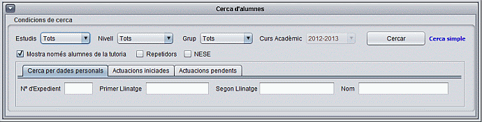

La pantalla principal consta de dues parts, la part superior per especificar les condicions de cerca i la inferior on es mostren el resultat de la cerca. El resultat es mostra en forma de taula. En columnes es pot llegir el número d'expedient de l'alumne, grup, llinatges i nom i la darrera columna l'estat de l'alumne (bandera).
Si sou tutor, quan el programa s'engega mostra els alumnes que teniu assignats a la tutoria. Devora el número d'expedient veureu una icona en forma de llapis que indica que teniu dret d'edició.
Si provau de desmarcar el camp "Mostra només alumnes assignats a la tutoria" obtindreu un llistat amb tots els alumnes del centre. Comprovau que la icona canvia a un dibuix d'un pany per alumnes que no són de la vostra tutoria.

Per accedir a la cerca avançada fer clic sobre el text en blau "cerca avançada". Es desplegarà un panell amb 3 pestanyes.
Generalment, aquesta eina no és imprescindible pel tutor,
és una funció més útil per prefectura o
l'administrador.
Les accions de tutoria consisteixen en mesures que estableix el ROF
del centre i fan referència a aspectes d'assistència,
puntualitat i disciplina. Aquestes accions van des de l'enviament d'un
SMS als pares fins a l'expulsió per expedient disciplinari.
Més endavant s'expliquen les accions de tutoria amb més
detall.
Les actuacions poden estar obertes/iniciades i tancades/finalitzades.
El programa permet cercar per actuacions que tenen associada enviament
de carta o SMS i permet filtrar també pel tipus
d'actuació.